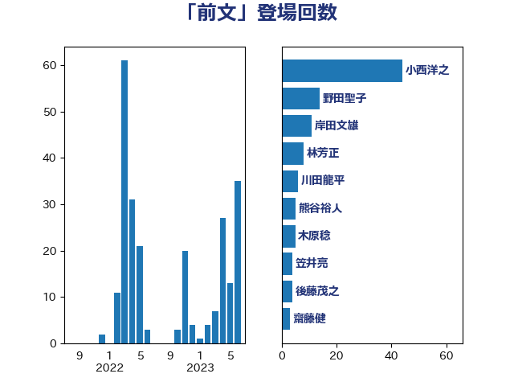

単語「前文」

| 小西洋之 | 立憲民主党 | 44 回 |
| 野田聖子 | 自由民主党 | 14 回 |
| 岸田文雄 | 自由民主党 | 11 回 |
| 林芳正 | 自由民主党 | 8 回 |
| 川田龍平 | 立憲民主党 | 6 回 |
| 熊谷裕人 | 立憲民主党 | 5 回 |
| 木原稔 | 自由民主党 | 5 回 |
| 笠井亮 | 日本共産党 | 4 回 |
| 後藤茂之 | 自由民主党 | 4 回 |
| 齋藤健 | 自由民主党 | 3 回 |
| 高橋千鶴子 | 日本共産党 | 3 回 |
| 羽田次郎 | 立憲民主党 | 3 回 |
| 石垣のりこ | 立憲民主党 | 3 回 |
| 浜田靖一 | 自由民主党 | 3 回 |
| 浅尾慶一郎 | 自由民主党 | 3 回 |
| 山添拓 | 日本共産党 | 3 回 |
| 三木圭恵 | 日本維新の会 | 3 回 |
| 青山大人 | 立憲民主党 | 2 回 |
| 金村龍那 | 日本維新の会 | 2 回 |
| 足立康史 | 日本維新の会 | 2 回 |
| 赤池誠章 | 自由民主党 | 2 回 |
| 赤嶺政賢 | 日本共産党 | 2 回 |
| 谷田川元 | 立憲民主党 | 2 回 |
| 穀田恵二 | 日本共産党 | 2 回 |
| 福島伸享 | 無所属 | 2 回 |
| 石川大我 | 立憲民主党 | 2 回 |
| 玉木雄一郎 | 国民民主党 | 2 回 |
| 浅田均 | 日本維新の会 | 2 回 |
| 櫛渕万里 | れいわ新選組 | 2 回 |
| 松川るい | 自由民主党 | 2 回 |
| 新藤義孝 | 自由民主党 | 2 回 |
| 打越さく良 | 立憲民主党 | 2 回 |
| 山本太郎 | れいわ新選組 | 2 回 |
| 小倉將信 | 自由民主党 | 2 回 |
| 安江伸夫 | 公明党 | 2 回 |
| 塩川鉄也 | 日本共産党 | 2 回 |
| 吉良よし子 | 日本共産党 | 2 回 |
| 吉田宣弘 | 公明党 | 2 回 |
| 北側一雄 | 公明党 | 2 回 |
| 加藤勝信 | 自由民主党 | 2 回 |
| 伊藤岳 | 日本共産党 | 2 回 |
| 井上哲士 | 日本共産党 | 2 回 |
| 上田清司 | 国民民主党 | 2 回 |
| 高木かおり | 日本維新の会 | 1 回 |
| 馬場雄基 | 立憲民主党 | 1 回 |
| 階猛 | 立憲民主党 | 1 回 |
| 阿部司 | 日本維新の会 | 1 回 |
| 鎌田さゆり | 立憲民主党 | 1 回 |
| 鈴木敦 | 国民民主党 | 1 回 |
| 辻清人 | 自由民主党 | 1 回 |
| 越智隆雄 | 自由民主党 | 1 回 |
| 赤松健 | 自由民主党 | 1 回 |
| 衛藤晟一 | 自由民主党 | 1 回 |
| 稲田朋美 | 自由民主党 | 1 回 |
| 福重隆浩 | 公明党 | 1 回 |
| 福島みずほ | 社会民主党 | 1 回 |
| 神津たけし | 立憲民主党 | 1 回 |
| 石橋通宏 | 立憲民主党 | 1 回 |
| 田島麻衣子 | 立憲民主党 | 1 回 |
| 熊田裕通 | 自由民主党 | 1 回 |
| 浜地雅一 | 公明党 | 1 回 |
| 泉健太 | 立憲民主党 | 1 回 |
| 末松信介 | 自由民主党 | 1 回 |
| 木村英子 | れいわ新選組 | 1 回 |
| 平木大作 | 公明党 | 1 回 |
| 岡本あき子 | 立憲民主党 | 1 回 |
| 山田宏 | 自由民主党 | 1 回 |
| 山田勝彦 | 立憲民主党 | 1 回 |
| 山本順三 | 自由民主党 | 1 回 |
| 山岸一生 | 立憲民主党 | 1 回 |
| 小野泰輔 | 日本維新の会 | 1 回 |
| 宮本岳志 | 日本共産党 | 1 回 |
| 國重徹 | 公明党 | 1 回 |
| 北神圭朗 | 無所属 | 1 回 |
| 勝部賢志 | 立憲民主党 | 1 回 |
| 務台俊介 | 自由民主党 | 1 回 |
| 伊藤俊輔 | 立憲民主党 | 1 回 |
| 丹羽秀樹 | 自由民主党 | 1 回 |
| 中谷一馬 | 立憲民主党 | 1 回 |
| 中川正春 | 立憲民主党 | 1 回 |